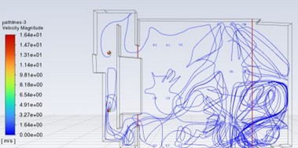

Hi👋, I'm Daniel Brown
A Data Scientist passionate about statistical reasoning, data science at scale, and computational mechanical engineering.
Check out my work 👨‍🔧
🧮Data Science
Investigation into Portfolio Diversification using Python
Analyzed trends in price history, correlation, and volatility to compute they expected return for a high risk individual stock portfolio and low risk index portfolio based on price history from the last 20 years. Used yfinance api to pull historical stock data, cleaned the data using python, and visualized the data using Matplotlib.
 View Project
View Project
🔧Mechanical Engineering
A 3D printed Embouchure-Assistive Device for Musicians with Facial Palsy
I developed a novel 3D-printed embouchure-assistive device designed for saxophone players with facial palsy, which affects the facial muscles and can hinder their ability to play. The device was tested and showed significant improvements in note sustain, air pressure within the mouthpiece, and overall comfort and tone quality. The design iterations of the prototype are also included as a potential template for broader applications in musicians with facial palsy.
View Project🔧Mechanical Engineering
Computational Fluid Dynamics - Determining the Effect of Particle Dispersion of an Infected Individual with COVID-19 in the Classroom Setting
In my study, I used Computational Fluid Dynamics (CFD) to analyze how COVID-19 transmission is influenced by various factors within mechanically ventilated buildings at UC San Diego. Specifically, I investigated how room geometry, temperature, and the location of an infected student affect particle movement and airflow of the virus within Pepper Canyon Hall.
 View ProjectAbout Me 👨‍💻
Here’s a bit about who I am, my background, and what I’m passionate about.
Learn more